MT百家樂 vs JP百家樂｜MT、JP真人荷官顏值比較與JP真人試玩
MT真人荷官、JP真人荷官 誰更好看？完整比較 MT百家樂 與 JP百家樂 荷官顏值、國籍、造型風格、互動體驗與真人桌差異，解析JP隨機倍率、真人百家樂玩法特色，並提供 JP真人試玩 教學與操作步驟，帶你快速了解兩大真人百家樂的荷官與遊戲特色。
MT百家樂介紹
MT百家樂過去以真人荷官直播、中文互動與即時牌局受到不少玩家關注，其中MT真人荷官更是主要特色之一。不過目前MT真人桌的荷官陣容已出現變化，過去熟悉的中文互動與台灣荷官目前已看不到。除了百家樂之外，MT仍提供骰寶、龍虎等真人遊戲，並搭配牌路、排行榜與桌台資訊，方便玩家查看不同真人牌局。
| 項目分類 | 內容說明 |
|---|---|
| 平台名稱 | MT百家樂 |
| 遊戲特色 | MT百家樂以真人直播與即時牌局為主 |
| 真人荷官 | MT真人荷官目前陣容已與過去不同 |
| 互動體驗 | 過去主打中文互動，目前已看不到原有中文荷官陣容 |
| 台灣荷官 | 過去曾有台灣荷官，目前已看不到原有台灣荷官 |
| 熱門遊戲 | 百家樂、骰寶、龍虎等真人遊戲 |
| 桌台功能 | 提供牌路、排行榜與荷官資訊，方便快速選桌 |
JP百家樂介紹
JP百家樂是2026年推出的真人百家樂，除了經典莊、閒、和玩法，也加入隨機倍率機制，讓傳統真人牌局多了不同的倍率變化。遊戲由JP真人荷官即時直播發牌，搭配中文互動、牌路資訊與真人桌台，提升整體臨場感。第一次接觸的玩家可以先透過JP真人試玩熟悉荷官陣容、下注介面與隨機倍率玩法，再進一步比較JP百家樂與MT百家樂在真人荷官、互動體驗及玩法機制上的差異。
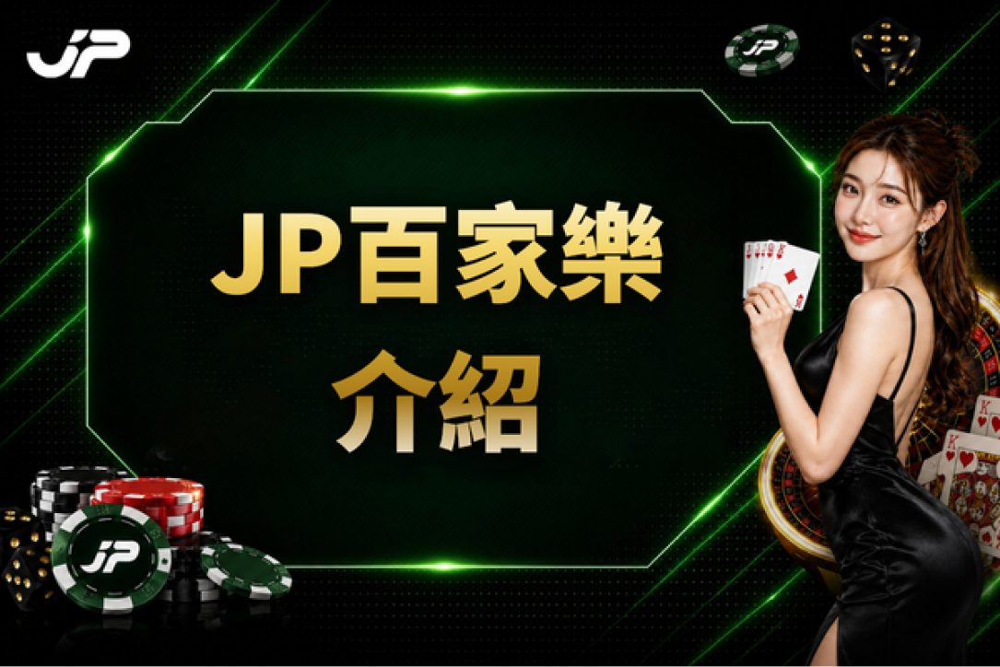
| 項目分類 | 內容說明 |
|---|---|
| 平台名稱 | JP百家樂 |
| 上線時間 | 2026年推出 |
| 真人荷官 | JP真人荷官真人直播發牌 |
| 互動體驗 | 中文互動搭配真人直播，提升牌局臨場感 |
| 台灣荷官 | 提供台灣JP真人荷官真人桌 |
| 玩法特色 | JP百家樂加入隨機倍率玩法 |
| 試玩體驗 | JP真人試玩可先熟悉桌台與倍率玩法 |
MT真人荷官與JP真人荷官有什麼差異？
比較MT百家樂與JP百家樂時，真人荷官是最直觀的差異之一。兩者都以真人直播呈現百家樂牌局，但MT真人荷官與JP真人荷官在荷官陣容、造型風格、直播氛圍與互動方式上各有特色。若玩家選擇真人百家樂時特別重視荷官，可以從顏值風格、桌台標示、互動感與整體直播體驗進一步比較。
荷官顏值風格比較
真人荷官的外型喜好因人而異，MT真人荷官與JP真人荷官也各自呈現不同的妝髮、服裝與直播風格。對玩家而言，與其單純判斷哪一邊「比較好看」，更適合直接觀察當下荷官陣容、造型與真人桌場景，選擇自己偏好的直播風格。尤其真人荷官可能依班表更換，因此不同時間進入遊戲，實際看到的荷官陣容也可能有所不同。
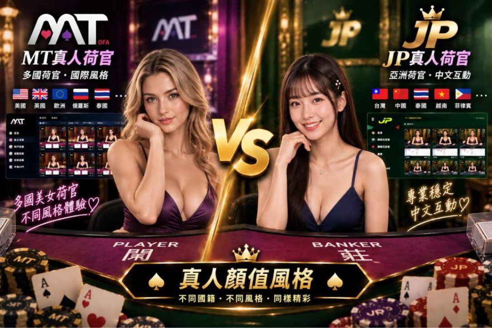
| 顏值比較 | MT真人荷官 | JP真人荷官 |
|---|---|---|
| 外型風格 | MT真人荷官呈現多元外型與個人特色 | JP真人荷官以不同外型與造型風格為特色 |
| 妝髮造型 | 依不同荷官呈現各自妝容與髮型 | 荷官妝髮與造型具有不同個人特色 |
| 服裝風格 | 依荷官呈現不同服裝與整體造型 | 搭配不同服裝展現荷官整體形象 |
| 顏值選擇 | 各類主播，可依個人喜好選擇 | 各類主播，可依個人喜好選擇 |
荷官國籍有什麼不同
如果玩家特別在意台灣荷官或中文真人桌，可以從遊戲內的荷官資料、桌台分類、旗幟或語言標示進行確認，而不應單純依外貌判斷國籍。MT真人荷官過去的台灣荷官陣容受到不少玩家關注，而JP真人荷官則可依目前開放桌台查看相關荷官資訊；由於真人荷官會依排班與平台調整，實際陣容仍應以進入遊戲時的標示為準。
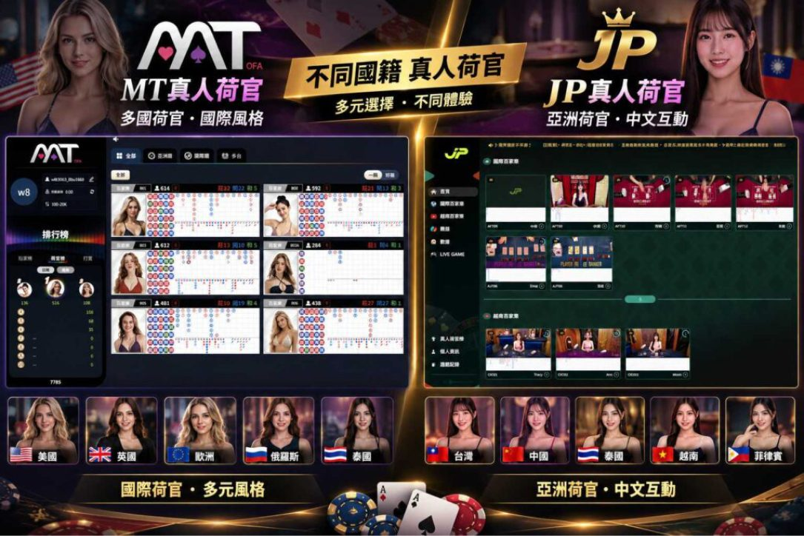
| 國籍比較 | MT真人荷官 | JP真人荷官 |
|---|---|---|
| 台灣荷官 | 曾有台灣MT真人荷官 | 目前提供台灣JP真人荷官 |
| 目前國籍 | 依目前平台標示的荷官資料為準 | 可查看台灣荷官及其他目前開放的荷官 |
| 國籍標示 | 依荷官資料與桌台標示確認 | 依荷官資料與桌台標示確認 |
| 主要差異 | 目前已無過去熟悉的台灣荷官陣容 | JP真人荷官目前仍提供台灣荷官 |
線上百家樂詐騙怎麼判斷？
判斷線上百家樂詐騙不能只看網站外觀，因為假冒平台同樣可能使用精美介面、優惠活動或真人百家樂畫面吸引用戶。比較需要注意的情況包括宣稱穩賺、提供所謂必勝公式、要求透過來源不明的連結登入，以及平台規則、出入金條件或客服資訊交代不清。搜尋線上百家樂推薦時，可以先確認網址來源與平台資訊，再了解遊戲內容與優惠，遇到過度強調高獲利或催促付款的資訊也應提高警覺，避免只因真人美女百家樂畫面或高額優惠就忽略基本風險。
荷官互動感比較
真人百家樂與一般電子百家樂最大的差別之一，就是可以直接觀看荷官完成洗牌、發牌與開牌流程。MT真人荷官與JP真人荷官都能帶來真人直播的臨場感，但實際體驗還會受到荷官表現、直播節奏、桌台場景與遊戲機制影響。玩家如果重視互動氛圍，可以從荷官直播表現、牌局節奏與整體桌台感受來比較，而不只是看下注功能。
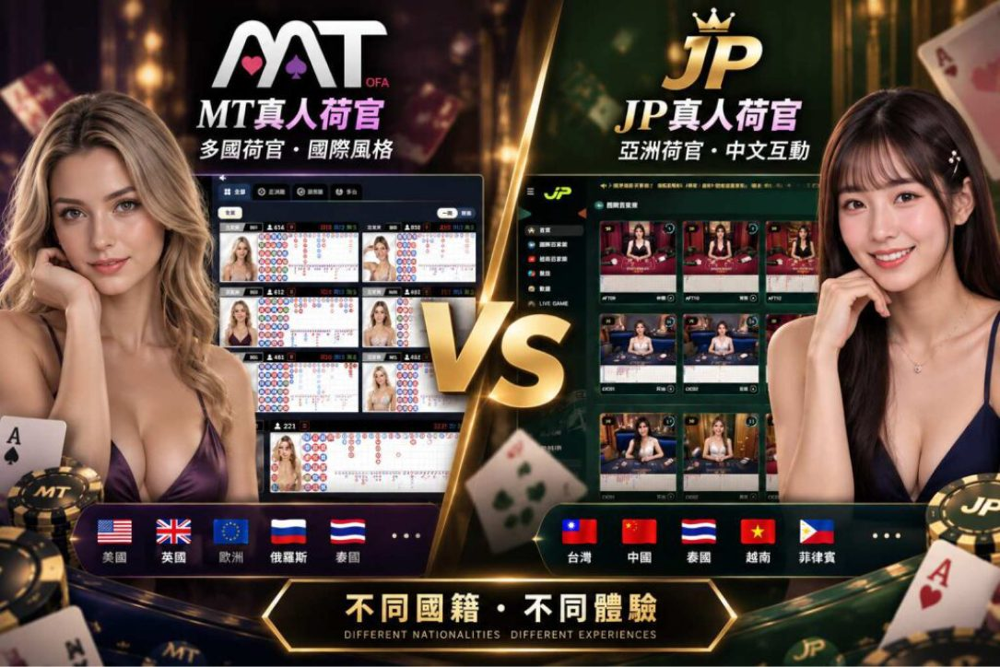
| 比較項目 | MT真人荷官 | JP真人荷官 |
|---|---|---|
| 真人直播 | MT真人荷官透過直播進行真人發牌與開牌 | JP真人荷官透過直播呈現完整真人牌局 |
| 互動體驗 | 著重荷官表現、牌局節奏與真人桌氛圍 | 真人荷官直播結合JP特色玩法與桌台體驗 |
| 臨場感 | 真人直播提升百家樂臨場感 | 不同荷官的直播節奏皆不相同 |
MT與JP真人荷官整體比較總覽
整體而言，MT百家樂與JP百家樂都將真人荷官作為重要的遊戲體驗，但各自呈現的重點不同。MT對不少玩家而言具有熟悉的真人桌與MT真人荷官特色；JP則透過JP真人荷官搭配隨機倍率等玩法，增加真人百家樂的變化。實際選擇時，可以綜合比較荷官風格、桌台氛圍、直播體驗與玩法，而不是只以單一條件判斷。
| 比較項目 | MT百家樂 | JP百家樂 |
|---|---|---|
| 真人荷官 | MT真人荷官 | JP真人荷官 |
| 荷官風格 | 具有不同荷官造型、真人桌與直播場景 | 具有不同荷官造型與真人直播風格 |
| 直播體驗 | 著重真人荷官、牌路與桌台體驗 | 真人荷官直播結合JP特色玩法 |
| 玩法特色 | 以經典真人百家樂牌局為主要體驗 | JP百家樂加入隨機倍率玩法 |
| 試玩體驗 | 依目前平台提供方式為準 | 可透過JP真人試玩熟悉桌台與玩法 |
JP百家樂有哪些獨特玩法？
JP百家樂除了真人荷官直播與基本百家樂規則之外，較具特色的地方在於加入隨機倍率玩法。玩家仍然可以按照熟悉的莊、閒、和方式進行牌局，再依遊戲當局顯示的倍率資訊了解適用規則。這讓JP真人荷官直播除了保留傳統真人百家樂的臨場感，也多了一項與一般真人桌不同的玩法機制。
首創隨機倍率玩法
隨機倍率是JP百家樂主要玩法特色之一。玩家依一般百家樂流程完成操作後，系統會按照遊戲規則顯示當局倍率，再由JP真人荷官完成真人發牌與開牌。對原本熟悉傳統真人百家樂的玩家來說，基本牌局並不陌生，但倍率的加入讓每局遊戲多了一項需要留意的資訊，也形成JP真人百家樂較具辨識度的玩法。
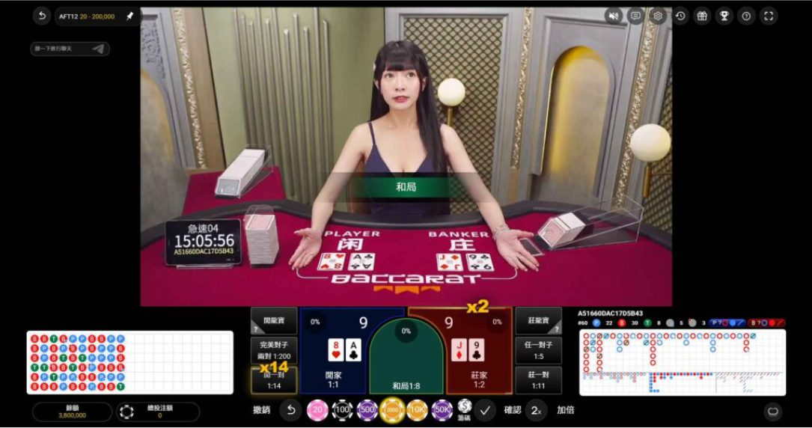
| 玩法項目 | 內容說明 |
|---|---|
| 核心特色 | JP百家樂在傳統真人百家樂中加入隨機倍率機制 |
| 基本流程 | 依百家樂規則完成操作後，再查看當局顯示的隨機倍率資訊 |
| 真人發牌 | 由JP真人荷官進行真人直播發牌與開牌 |
| 玩法差異 | 保留熟悉的百家樂牌局，同時增加每局倍率變化 |
業界最高賠率
JP真人百家樂主打高倍率玩法，但實際最高倍率、適用條件與派彩方式應以遊戲當下公布的規則為準。對玩家而言，比起只看「最高倍率」數字，更重要的是了解倍率如何出現、哪些投注項目適用，以及最後如何計算派彩。透過JP真人試玩先熟悉規則，也能更清楚理解隨機倍率與一般百家樂派彩方式的差異。
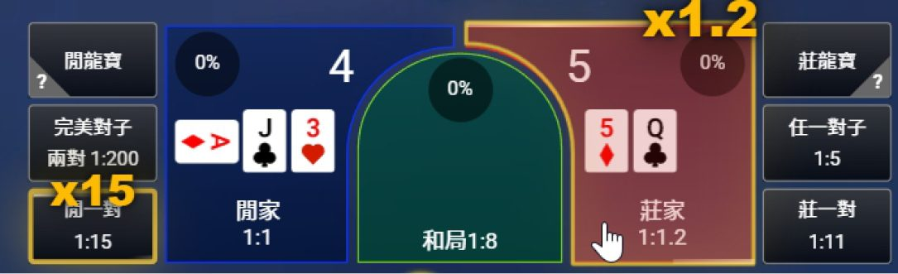
| 倍率項目 | 內容說明 |
|---|---|
| 玩法特色 | JP真人百家樂主打高倍率與隨機倍率玩法 |
| 倍率顯示 | 依每局遊戲顯示的倍率資訊與適用條件為準 |
| 派彩方式 | 實際倍率、適用投注與派彩方式依遊戲規則計算 |
| 熟悉玩法 | 可先透過JP真人試玩了解倍率出現與結算方式 |
專業台灣荷官
除了倍率玩法之外，真人荷官也是玩家比較JP百家樂時會注意的重點。如果想尋找台灣或中文互動的JP真人荷官，可以直接查看當下桌台提供的荷官資訊與語言標示。由於真人荷官會依排班調整，因此實際開放陣容可能隨時間不同，建議以遊戲內最新資訊為準。
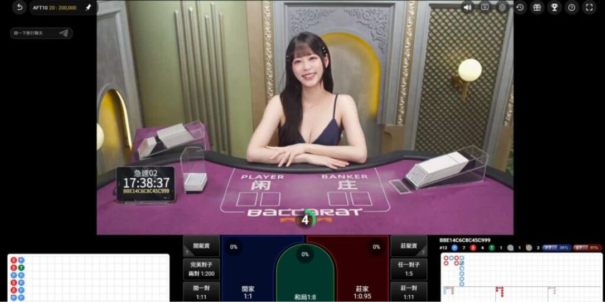
| 荷官項目 | 內容說明 |
|---|---|
| 真人荷官 | JP真人荷官透過真人直播完成發牌與開牌流程 |
| 荷官資訊 | 可從當下真人桌查看荷官資料、桌台分類與相關標示 |
| 中文真人 | 可依遊戲內提供的語言及桌台資訊選擇 |
| 荷官陣容 | 真人荷官可能依排班調整，實際陣容以遊戲內最新資訊為準 |
與一般百家樂有什麼不同
一般真人百家樂主要圍繞莊、閒、和投注、真人發牌與結果判定，而JP百家樂則在熟悉的真人牌局中增加隨機倍率機制。玩家一樣可以觀看JP真人荷官完成完整牌局，但部分玩法會多出倍率資訊與相應的結算規則。對已經熟悉MT百家樂或其他傳統真人桌的玩家而言，這也是JP較容易感受到的玩法差異。
| 比較項目 | 一般真人百家樂 | JP百家樂 |
|---|---|---|
| 基本玩法 | 以莊、閒、和等傳統百家樂投注為主 | 保留莊、閒、和等經典百家樂玩法 |
| 真人荷官 | 真人荷官直播發牌與開牌 | JP真人荷官進行真人直播牌局 |
| 倍率玩法 | 依一般百家樂規則與派彩方式進行 | JP百家樂加入隨機倍率機制 |
| 牌局變化 | 以傳統真人百家樂流程為核心 | 傳統牌局結合倍率資訊，增加玩法變化 |
| 新手體驗 | 依各遊戲提供的試玩方式為準 | 可先透過JP真人試玩熟悉桌台與倍率玩法 |
JP真人試玩步驟教學
第一次接觸JP百家樂，建議先透過JP真人試玩熟悉完整遊戲流程，不必急著直接進入正式牌局。玩家可以先從真人大廳查看不同桌台與JP真人荷官，接著熟悉莊、閒、和等下注區域、籌碼選擇、歷史牌路與真人直播畫面，再進一步觀察JP較具特色的隨機倍率如何出現與套用。透過實際試玩，不僅能了解真人發牌、開牌到結果結算的完整流程，也能比較JP百家樂與MT百家樂在荷官風格、桌台介面、直播體驗及玩法機制上的差異，對第一次接觸JP真人百家樂的玩家來說會更容易上手。
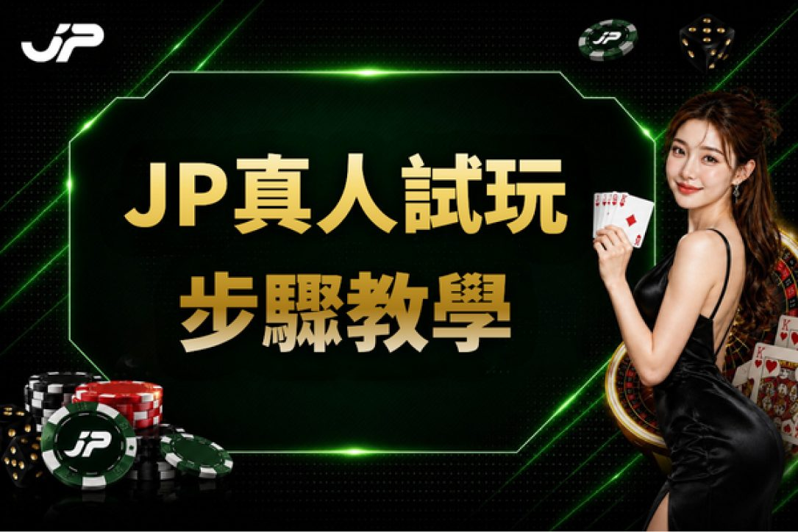
JP真人試玩步驟
STEP 1：開啟JP真人遊戲入口
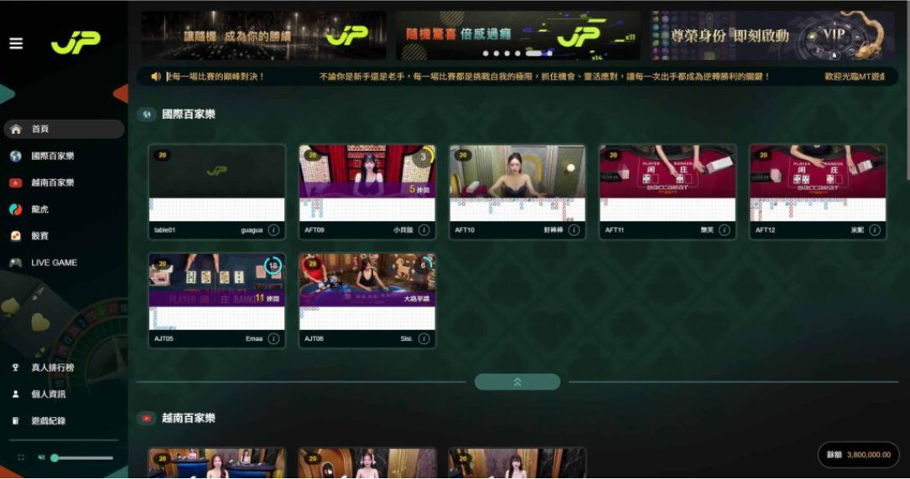
STEP 2：進入真人百家樂分類，選擇想體驗的遊戲桌
STEP 3：先觀察目前JP真人荷官、桌台資訊與直播畫面
STEP 4：查看莊、閒、和、牌路與籌碼等主要功能位置
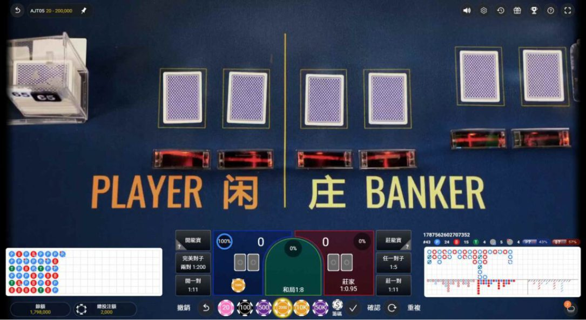
STEP 5：留意牌局中的倍率資訊，了解隨機倍率出現與適用方式
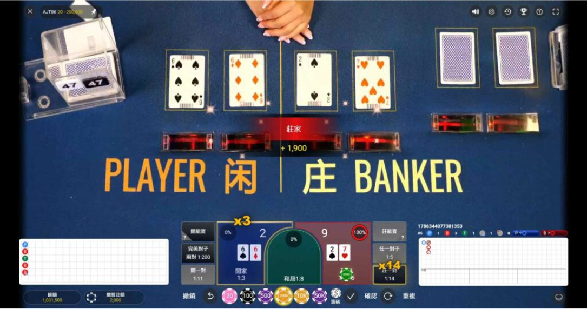
STEP 6：從選桌、操作、倍率顯示到真人發牌與開牌，完整了解JP百家樂流程
立即體驗JP真人百家樂試玩
如果你原本熟悉MT百家樂與MT真人荷官，現在想比較另一種真人荷官與百家樂體驗，可以先從JP真人試玩開始。實際進入桌台後，可以直接查看當下JP真人荷官陣容、直播畫面、牌路、下注介面與隨機倍率玩法，再依自己的喜好比較兩者差異。無論更在意荷官風格、真人互動還是玩法變化，先了解完整規則與桌台內容，都能更容易找到符合自己偏好的JP真人百家樂體驗。
免費試玩常見問題 FAQ
Q1：MT百家樂和JP百家樂有什麼不同？
MT百家樂與JP百家樂都以真人百家樂與荷官直播為核心，主要差異可從真人荷官陣容、直播風格、桌台介面與玩法機制比較。JP另外加入隨機倍率玩法，因此除了荷官體驗之外，在遊戲機制上也與一般真人百家樂有所不同。
Q2：MT真人荷官和JP真人荷官差在哪？
MT真人荷官與JP真人荷官可以從荷官陣容、妝髮造型、直播場景、互動方式與桌台氛圍進行比較。由於真人荷官可能依排班更換，實際差異仍建議以當下兩邊開放的真人桌為準。
Q3：MT、JP哪家真人荷官比較好看？
真人荷官顏值沒有客觀標準，主要取決於玩家個人喜好。有人偏好MT真人荷官的風格，也有人喜歡JP真人荷官的造型與直播氛圍，因此可以直接比較當下荷官陣容、妝髮服裝與真人桌場景，再選擇自己喜歡的風格。
Q4：JP百家樂隨機倍率怎麼玩？
JP百家樂在基本真人百家樂流程中加入隨機倍率，玩家可以留意每局顯示的倍率資訊，再由JP真人荷官完成發牌與結果判定。實際倍率、適用投注與派彩方式仍以遊戲當局公布的規則為準。
Q5：JP真人試玩可以免費體驗嗎？
JP真人試玩是否提供免費模式、試玩額度及哪些功能，應以目前遊戲入口實際開放內容為準。若有提供試玩模式，可以先用來熟悉JP百家樂、JP真人荷官、牌路介面與隨機倍率玩法，再了解完整真人百家樂流程。